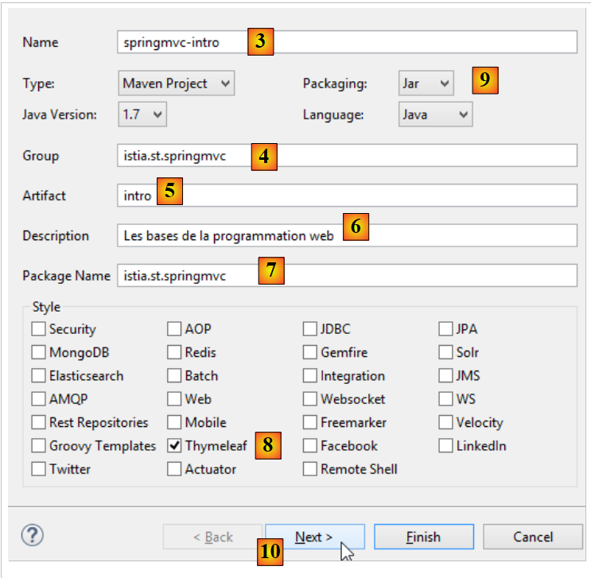
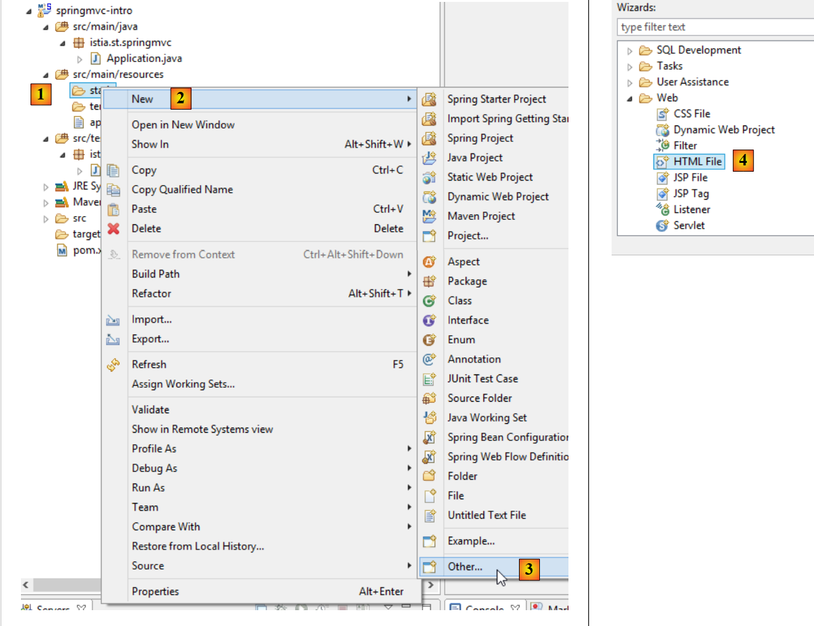
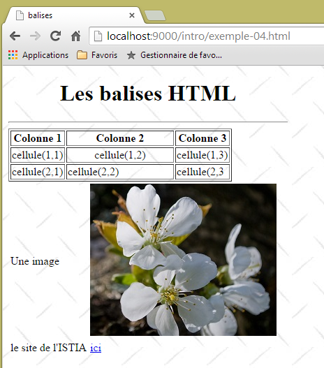
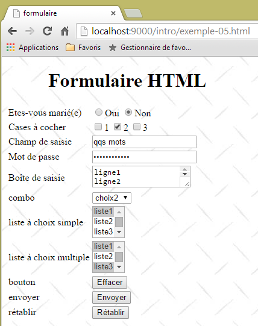
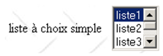
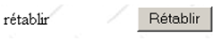

2. The Basics of Web Programming
The primary purpose of this chapter is to introduce the key principles of web programming, which are independent of the specific technology used to implement them. It presents numerous examples that you are encouraged to test in order to gradually “absorb” the philosophy of web development. Readers who already possess this knowledge may proceed directly to Chapter 3.
The components of a web application are as follows:

Number | Role | Common Examples |
1 | Server OS | Unix, Linux, Windows |
2 | Web Server | Apache (Unix, Linux, Windows) IIS (Windows + .NET platform) Node.js (Unix, Linux, Windows) |
3 | Server-side code. It can be executed by server modules or by programs external to the server (CGI). | JAVASCRIPT (Node.js) PHP (Apache, IIS) JAVA (Tomcat, WebSphere, JBoss, WebLogic, ...) C#, VB.NET (IIS) |
4 | Database - This can be on the same machine as the program that uses it or on another machine via the Internet. | Oracle (Linux, Windows) MySQL (Linux, Windows) Postgres (Linux, Windows) SQL Server (Windows) |
5 | Client OS | Unix, Linux, Windows |
6 | Web Browser | Chrome, Internet Explorer, Firefox, Opera, Safari, ... |
7 | Client-side scripts executed within the browser. These scripts have no access to the client machine's disk. | JavaScript (all browsers) |
2.1. Data exchange in a web application with a form

Number | Role |
1 | The browser requests a URL for the first time (http://machine/url). No parameters are passed. |
2 | The web server sends the web page for that URL. It may be static or dynamically generated by a server-side script (SA) that may have used content from databases (SB, SC). Here, the script will detect that the URL was requested without any parameters and will generate the initial web page. The browser receives the page and displays it (CA). Browser-side scripts (CB) may have modified the initial page sent by the server. Then, through interactions between the user (CD) and the scripts (CB) , the web page will be modified. In particular, forms will be filled out. |
3 | The user submits the form data, which must then be sent to the web server. The browser requests the initial URL or another one, as appropriate, and simultaneously transmits the form values to the server. It can use two methods for this: GET and POST. Upon receiving the client’s request, the server triggers the script (SA) associated with the requested URL, which will detect the parameters and process them. |
4 | The server delivers the web page generated by the program (SA, SB, SC). This step is identical to the previous step 2. Communication now proceeds according to steps 2 and 3. |
2.2. Static Web Pages, Dynamic Web Pages
A static page is represented by an HTML file. A dynamic page is an HTML page generated "on the fly" by the web server.
2.2.1. Static HTML (HyperText Markup Language) Page
Let’s build our first Spring MVC project [1-2]:
 |
- In [1-2], we create a new project based on Spring Boot [http://projects.spring.io/spring-boot/];
 |
- the information [3-7] is for the project’s Maven configuration;
- in [3], the name of the Maven project;
- in [4], the Maven group where the project’s compilation output will be placed;
- in [5], the name given to the compilation output;
- in [6], a description of the project;
- in [7], the package in which the project’s executable class will be placed;
- in [8], the nature of the project. This is a web project with Thymeleaf views. Here, we see all the ready-to-use Maven dependencies provided by the Spring Boot project;
- in [9], we specify that the output of the Maven build will be packaged in a JAR archive rather than a WAR. The project will then use an embedded Tomcat server, which will be included in its dependencies;
- in [10], we proceed to the next step of the wizard;
 |
- in [11], we specify the project directory;
- in [12], we finish the wizard;
- In [13], the generated project.
Let’s examine the generated [pom.xml] file:
<?xml version="1.0" encoding="UTF-8"?>
<project xmlns="http://maven.apache.org/POM/4.0.0" xmlns:xsi="http://www.w3.org/2001/XMLSchema-instance"
xsi:schemaLocation="http://maven.apache.org/POM/4.0.0 http://maven.apache.org/xsd/maven-4.0.0.xsd">
<modelVersion>4.0.0</modelVersion>
<groupId>istia.st.springmvc</groupId>
<artifactId>intro</artifactId>
<version>0.0.1-SNAPSHOT</version>
<packaging>jar</packaging>
<name>springmvc-intro</name>
<description>The basics of web programming</description>
<parent>
<groupId>org.springframework.boot</groupId>
<artifactId>spring-boot-starter-parent</artifactId>
<version>1.1.9.RELEASE</version>
<relativePath /> <!-- lookup parent from repository -->
</parent>
<dependencies>
<dependency>
<groupId>org.springframework.boot</groupId>
<artifactId>spring-boot-starter-web</artifactId>
</dependency>
<dependency>
<groupId>org.springframework.boot</groupId>
<artifactId>spring-boot-starter-test</artifactId>
<scope>test</scope>
</dependency>
</dependencies>
<properties>
<project.build.sourceEncoding>UTF-8</project.build.sourceEncoding>
<start-class>istia.st.springmvc.Application</start-class>
<java.version>1.7</java.version>
</properties>
<build>
<plugins>
<plugin>
<groupId>org.springframework.boot</groupId>
<artifactId>spring-boot-maven-plugin</artifactId>
</plugin>
</plugins>
</build>
</project>
It includes all the information provided in the wizard. On lines 26–30, we find a dependency we weren’t aware of. It enables the integration of JUnit unit tests with Spring.
Let’s start by creating a static HTML page in this project. By default, it should be placed in the [src/main/resources/static] folder:
 |
- In [1-4], create an HTML file in the [static] folder;
 |
- in [6], give the page a name;
- in [7], the page has been added.
The content of the created page is as follows:
<!DOCTYPE html>
<html>
<head>
<meta charset="ISO-8859-1">
<title>Insert title here</title>
</head>
<body>
</body>
</html>
- lines 2-10: the code is delimited by the root tag <html>;
- lines 3-6: the <head> tag delimits what is called the page header;
- lines 7-9: the <body> tag delimits what is called the body of the page.
Let’s modify this code as follows:
<!DOCTYPE html>
<html xmlns="http://www.w3.org/1999/xhtml">
<head>
<meta http-equiv="Content-Type" content="text/html; charset=utf-8" />
<title>Test 1: a static page</title>
</head>
<body>
<h1>A static page...</h1>
</body>
</html>
- line 5: defines the page title – will be displayed as the title of the browser window displaying the page;
- line 8: text in large font (<h1>).
Let’s run the application [1-3]:
 |
then, using a browser, let’s request the URL [http://localhost:8080/exemple-01.html]:
 |
- in [1], the URL of the displayed page;
- in [2], the window title – provided by the page’s <title> tag;
- in [3], the body of the page – was provided by the <h1> tag.
Let's look at [4-5] the HTML code received by the browser:
 |
- In [5], the browser received the HTML page we had built. It interpreted it and rendered it as a graphical display. ### 2.2.2. A dynamic Thymeleaf page
Now let’s create a Thymeleaf page. It’s a standard HTML page with tags enriched with [Thymeleaf] attributes [http://www.thymeleaf.org/]. We follow a process similar to that of creating the HTML page, but this time the new HTML page must be placed in the [templates] folder:
 |
The [example-02.html] page will look like this:
<!DOCTYPE HTML>
<html xmlns:th="http://www.thymeleaf.org">
<head>
<title>spring mvc intro</title>
<meta http-equiv="Content-Type" content="text/html; charset=UTF-8" />
</head>
<body>
<p th:text="'It is ' + ${time}">Here is the time</p>
</body>
</html>
- line 8: the <p> tag is an HTML tag that introduces a paragraph into the displayed page. [th:text] is a [Thymeleaf] attribute that has two different purposes depending on whether [Thymeleaf] is active or not:
- if [Thymeleaf] does not parse the HTML page, the [th:text] attribute will be ignored because it is unknown in HTML. The displayed text will then be [Here is the time],
- if [Thymeleaf] interprets the HTML page, the [th:text] attribute will be evaluated and its value will replace the text [Here is the time]. Its value will be something like [It is 17:11:06];
Let’s see this in action. We’ll duplicate the page [templates/example-02.html] into the [static] folder. HTML pages placed in this folder are not interpreted by [Thymeleaf]:
 |  |  |
We run the application as we have done several times before, then request the URL [http://localhost:8080/exemple-02.html] in a browser:
 |
We see in [1] that the [th:text] attribute was not interpreted and did not cause an error either. The source code of the page displayed in [2] shows that the browser successfully received the complete page.
Let’s go back to the [example-02.html] page in the [templates] folder:
 |
HTML pages placed in the [templates] folder are processed by [Thymeleaf]. Let’s return to the page’s code:
<!DOCTYPE HTML>
<html xmlns:th="http://www.thymeleaf.org">
<head>
<title>spring mvc intro</title>
<meta http-equiv="Content-Type" content="text/html; charset=UTF-8" />
</head>
<body>
<p th:text="'It is ' + ${time}">Here is the time</p>
</body>
</html>
- line 7: [Thymeleaf] will interpret the [th:text] attribute and replace [Here is the time] with the value of the expression:
"'It is ' + ${time}"
This expression uses the variable [${time}], where [time] belongs to the view template [example-02.html]. We therefore need to create this template. To do so, we will follow the example discussed in section 1.6. We update the project as follows:
 |
In [1], we add the following controller:
package istia.st.springmvc;
import java.text.SimpleDateFormat;
import java.util.Date;
import org.springframework.stereotype.Controller;
import org.springframework.ui.Model;
import org.springframework.web.bind.annotation.RequestMapping;
@Controller
public class MyController {
@RequestMapping("/")
public String getTime(Model model) {
// time format
SimpleDateFormat formatter = new SimpleDateFormat("HH:MM:ss");
// current time
String time = formatter.format(new Date());
// add the time to the view model
model.addAttribute("time", time);
// display the view [example-02.html]
return "example-02";
}
}
- lines 13-14: the [time] method handles the URL [/];
- line 14: [Model model] is an empty model. The [time] action must populate it with the attributes it wants to see in the model. We know that the view [example-02.html] expects an attribute named [time];
- lines 19-22: implement what we just explained. The view [example-02.html] will be displayed (line 22) with an attribute named [time] in its model (line 20);
- line 16: a date formatter is created. The format [HH:MM:ss] used is a [hours:minutes:seconds] format where the hours are in the range [0-24];
- line 18: using this formatter, we format today’s date;
- line 20: the resulting time is assigned to an attribute named [time];
We launch the application and request the URL [/]:
 |
- [1] shows the resulting page and [2] its HTML content. We can see that the initial text [Here is the time] has completely disappeared;
If we now refresh the page [1] (F5), we get a different display (new time) even though the URL does not change. This is the dynamic aspect of the page: its content can change over time.
From the above, we can see the fundamentally different nature of dynamic and static pages.
2.2.3. Configuring the Spring Boot Application
Let’s return to the Eclipse project architecture:
 |
The [application.properties] file is used to configure the Spring Boot application. For now, this file is empty. It can be used to configure the application in various ways, as described at the URL [http://docs.spring.io/spring-boot/docs/current/reference/html/common-application-properties.html]. We will use the following [application.properties] file [2]:
- Line 1: sets the web application’s service port;
- line 2: sets the web application context;
With this configuration, the static page [example-01.html] will be accessible at the URL [http://localhost:9000/intro/exemple-01.html]:
 |
2.3. Browser-side scripts
An HTML page can contain scripts that will be executed by the browser. The primary browser-side scripting language is currently (Jan 2015) JavaScript. Hundreds of libraries have been built using this language to make developers’ lives easier.
Let’s create a new page [example-03.html] in the [static] folder of the existing project:
 |
Edit the [example-03.html] file with the following content:
<!DOCTYPE html>
<html xmlns="http://www.w3.org/1999/xhtml">
<head>
<meta http-equiv="Content-Type" content="text/html; charset=utf-8" />
<title>JavaScript example</title>
<script type="text/javascript">
function react() {
alert("You clicked the button!");
}
</script>
</head>
<body>
<input type="button" value="Click me" onclick="react()" />
</body>
</html>
- Line 13: Defines a button (type attribute) with the text "Click me" (value attribute). When clicked, the JavaScript function [react] is executed (onclick attribute);
- lines 6–10: a JavaScript script;
- lines 7–9: the [react] function;
- Line 8: displays a dialog box with the message [You clicked the button].
Let’s view the page in a browser:
 |
- in [1], the displayed page;
- in [2], the dialog box when the button is clicked.
When you click the button, there is no communication with the server. The JavaScript code is executed by the browser.
With the vast number of JavaScript libraries available, we can now embed full-fledged applications directly in the browser. This leads to the following architectures:
 |
- 1-2: the HTML server is a server for static HTML5/CSS/JavaScript pages;
- 3-4: The delivered HTML5/CSS/JavaScript pages interact directly with the data server. The data server delivers data without HTML markup. JavaScript inserts this data into HTML pages already present in the browser.
In this architecture, the JavaScript code can become cumbersome. We therefore aim to structure it into layers, as we do for server-side code:
 |
- the [UI] layer is the one that interacts with the user;
- the [DAO] layer interacts with the data server;
- the [business] layer contains business procedures that interact neither with the user nor with the data server. This layer may not exist.
2.4. Client-server communication
Let’s return to our initial diagram illustrating the components of a web application:

Here, we are interested in the exchanges between the client machine and the server machine. These occur over a network, and it is worth reviewing the general structure of exchanges between two remote machines.
2.4.1. The OSI Model
The open network model known as OSI (Open Systems Interconnection Reference Model), defined by the ISO (International Standards Organization), describes an ideal network where communication between machines can be represented by a seven-layer model:
 |
Each layer receives services from the layer below it and provides its own services to the layer above it. Suppose two applications located on different machines A and B want to communicate: they do so at the Application layer. They do not need to know all the details of how the network operates: each application passes the information it wishes to transmit to the layer below it: the Presentation layer. The application therefore only needs to know the rules for interfacing with the Presentation layer. Once the information is in the Presentation layer, it is passed according to other rules to the Session layer, and so on, until the information reaches the physical medium and is physically transmitted to the destination machine. There, it will undergo the reverse process of what it underwent on the sending machine.
At each layer, the sender process responsible for sending the information sends it to a receiver process on the other machine belonging to the same layer as itself. It does so according to certain rules known as the layer protocol. We therefore have the following final communication diagram:
 |
The roles of the different layers are as follows:
Physical | Ensures the transmission of bits over a physical medium. This layer includes data processing terminal equipment (DPTE) such as terminals or computers, as well as data circuit termination equipment (DCTE) such as modulators/demodulators, multiplexers, and concentrators. Key considerations at this level are:
|
Data Link | Hides the physical characteristics of the Physical Layer. Detects and corrects transmission errors. |
Network | Manages the path that information sent over the network must follow. This is called routing: determining the route that information must take to reach its destination. |
Transport | Enables communication between two applications, whereas the previous layers only allowed communication between machines. A service provided by this layer can be multiplexing: the transport layer can use a single network connection (from machine to machine) to transmit data belonging to multiple applications. |
Session | This layer provides services that allow an application to open and maintain a working session on a remote machine. |
Presentation | It aims to standardize the representation of data across different machines. Thus, data originating from machine A will be "formatted" by machine A’s Presentation layer according to a standard format before being sent over the network. Upon reaching the Presentation layer of the destination machine B, which will recognize them thanks to their standard format, they will be formatted differently so that the application on machine B can recognize them. |
Application | At this level, we find applications that are generally close to the user, such as email or file transfer. |
2.4.2. The TCP/IP Model
The OSI model is an ideal model. The TCP/IP protocol suite approximates it in the following way:
 |
- the network interface (the computer’s network card) performs the functions of layers 1 and 2 of the OSI model
- the IP (Internet Protocol) layer performs the functions of layer 3 (network)
- the TCP (Transmission Control Protocol) or UDP (User Datagram Protocol) layer performs the functions of Layer 4 (transport). The TCP protocol ensures that the data packets exchanged between machines reach their destination. If they do not, it resends the lost packets. The UDP protocol does not perform this task, so it is up to the application developer to do so. This is why, on the internet—which is not a 100% reliable network—the TCP protocol is the most widely used. This is referred to as a TCP-IP network.
- The Application layer encompasses the functions of layers 5 through 7 of the OSI model.
Web applications reside in the Application layer and therefore rely on TCP/IP protocols. The Application layers of the client and server machines exchange messages, which are entrusted to layers 1 through 4 of the model to be routed to their destination. To communicate with each other, the Application layers of both machines must "speak" the same language or protocol. The protocol used by Web applications is called HTTP (HyperText Transfer Protocol). It is a text-based protocol, meaning that machines exchange lines of text over the network to communicate. These exchanges are standardized, meaning that the client has a set of messages to tell the server exactly what it wants, and the server also has a set of messages to provide the client with its response. This message exchange takes the following form:

Client --> Server
When the client makes a request to the web server, it sends
- text lines in HTTP format to indicate what it wants;
- an empty line;
- optionally a document.
Server --> Client
When the server responds to the client, it sends
- lines of text in HTTP format to indicate what it is sending;
- an empty line;
- optionally a document.
The exchanges therefore follow the same format in both directions. In both cases, a document may be sent, even though it is rare for a client to send a document to the server. But the HTTP protocol allows for this. This is what enables, for example, subscribers of an ISP to upload various documents to their personal website hosted by that ISP. The documents exchanged can be of any type. Consider a browser requesting a web page containing images:
- the browser connects to the web server and requests the page it wants. The requested resources are uniquely identified by URLs (Uniform Resource Locators). The browser sends only HTTP headers and no document.
- The server responds. It first sends HTTP headers indicating what type of response it is sending. This may be an error if the requested page does not exist. If the page exists, the server will indicate in the HTTP headers of its response that it will send an HTML (HyperText Markup Language) document following them. This document is a sequence of lines of text in HTML format. HTML text contains tags (markers) that provide the browser with instructions on how to display the text.
- The client knows from the server’s HTTP headers that it will receive an HTML document. It will parse this document and may notice that it contains image references. These images are not included in the HTML document. It therefore makes a new request to the same web server to request the first image it needs. This request is identical to the one made in step 1, except that the requested resource is different. The server will process this request by sending the requested image to the client. This time, in its response, the HTTP headers will specify that the document sent is an image and not an HTML document.
- The client retrieves the sent image. Steps 3 and 4 will be repeated until the client (usually a browser) has all the documents needed to display the entire page. ### 2.4.3. The HTTP Protocol
Let’s explore the HTTP protocol through examples. What do a browser and a web server exchange?
The web service or HTTP service is a TCP/IP service that typically operates on port 80. It could operate on a different port. In that case, the client browser would have to specify that port in the URL it requests. A URL generally has the following form:
protocol://machine[:port]/path/info
where
protocol | http for the Web service. A browser can also act as a client for FTP, news, Telnet, and other services. |
machine | name of the machine hosting the web service |
port | Web service port. If it is 80, the port number can be omitted. This is the most common case |
path | path to the requested resource |
info | additional information provided to the server to specify the client's request |
What does a browser do when a user requests a URL to be loaded?
- It establishes a TCP/IP connection with the machine and port specified in the machine[:port] portion of the URL. Establishing a TCP/IP connection means creating a "channel" of communication between two machines. Once this channel is established, all information exchanged between the two machines will pass through it. The creation of this TCP-IP pipe does not yet involve the Web’s HTTP protocol.
- Once the TCP-IP connection is established, the client sends its request to the web server by sending lines of text (commands) in HTTP format. It sends the path/info portion of the URL to the server
- The server will respond in the same way and through the same connection
- One of the two parties will decide to close the connection. This depends on the HTTP protocol used. With HTTP 1.0, the server closes the connection after each of its responses. This forces a client that needs to make multiple requests to retrieve the various documents comprising a web page to open a new connection for each request, which incurs a cost. With the HTTP/1.1 protocol, the client can tell the server to keep the connection open until it tells the server to close it. It can therefore retrieve all the documents of a web page with a single connection and close the connection itself once the last document has been obtained. The server will detect this closure and close the connection as well.
To examine the exchanges between a client and a web server, we will use the [Advanced Rest Client] extension for the Chrome browser that we installed in Section 9.6. We will be in the following situation:

The web server can be any server. Here, we aim to examine the exchanges that will occur between the browser and the web server. Previously, we created the following static HTML page:
<!DOCTYPE html>
<html xmlns="http://www.w3.org/1999/xhtml">
<head>
<meta http-equiv="Content-Type" content="text/html; charset=utf-8" />
<title>Test 1: A Static Page</title>
</head>
<body>
<h1>A static page...</h1>
</body>
</html>
which we view in a browser:
 |
We can see that the requested URL is: [http://localhost:9000/intro/exemple-01.html]. The web server is therefore localhost (=local machine) on port 9000. Let’s use the [Advanced Rest Client] application to request the same URL:
 |
- In [1], launch the application (in the [Applications] tab of a new Chrome tab);
- in [2], select the [Request] option;
- in [3], specify the server to query: http://localhost:9000;
- in [4], specify the requested URL: /intro/example-01.html;
- in [5], add any parameters to the URL. None here;
- in [6], specify the HTTP method used for the request, in this case GET.
This results in the following request:
 |
The request prepared in this way [7] is sent to the server by [8]. The response received is then as follows:
 |
We mentioned earlier that client-server exchanges take the following form:
- In [1], we see the HTTP headers sent by the browser in its request. It had no document to send;
- in [2], we see the HTTP headers sent by the server in response. In [3], we see the document it sent.
In [3], we recognize the static HTML page that we placed on the web server.
Let’s examine the browser’s HTTP request:
GET /intro/example-01.html HTTP/1.1
Host: localhost:9000
Connection: keep-alive
Pragma: no-cache
Cache-Control: no-cache
User-Agent: Mozilla/5.0 (Windows NT 6.3; WOW64) AppleWebKit/537.36 (KHTML, like Gecko) Chrome/39.0.2171.71 Safari/537.36
Content-Type: text/plain; charset=utf-8
Accept: */*
Accept-Encoding: gzip, deflate, sdch
Accept-Language: fr-FR,fr;q=0.8,en-US;q=0.6,en;q=0.4
- Line 1 was not displayed by the application;
- Line 6: The browser identifies itself with the [User-Agent] header;
- line 7: the browser indicates that it is sending a text document (text/plain) in UTF-8 format to the server. In fact, here, the browser did not send any document;
- line 8: the browser indicates that it accepts any type of document in response;
- line 9: the browser specifies the accepted document formats;
- line 10: the browser specifies the languages it prefers in order of preference.
The server responded by sending the following HTTP headers:
HTTP/1.1 200 OK
Server: Apache-Coyote/1.1
Last-Modified: Sat, Nov 29, 2014 07:31:43 GMT
Content-Type: text/html
Content-Length: 255
Date: Sat, 29 Nov 2014 08:20:52 GMT
- line 1: was not displayed by the application;
- line 2: the server identifies itself, in this case an Apache-Coyote server;
- line 3: the date the document was last modified;
- line 4: the type of document sent by the server. Here, an HTML document;
- line 5: the size in bytes of the HTML document sent.
- line 6: date and time of the response; ### 2.4.4. Conclusion
We have explored the structure of a web client’s request and the server’s response to it using a few examples. The communication takes place via the HTTP protocol, a set of text-based commands exchanged between the two parties. The client’s request and the server’s response follow the same structure:
The two common commands for requesting a resource are GET and POST. The GET command is not accompanied by a document. The POST command, on the other hand, is accompanied by a document that is most often a string of characters containing all the values entered in a form. The HEAD command allows you to request only the HTTP headers and is not accompanied by a document.
In response to a client’s request, the server sends a response with the same structure. The requested resource is transmitted in the [Document] section unless the client’s command was HEAD, in which case only the HTTP headers are sent.
2.5. The Basics of HTML
A web browser can display various documents, the most common being the HTML (HyperText Markup Language) document. This is formatted text using tags in the form <tag>text</tag>. Thus, the text <B>important</B> will display the text "important" in bold. There are standalone tags such as the <hr/> tag, which displays a horizontal line. We will not review all the tags that can be found in HTML text. There are many WYSIWYG software programs that allow you to build a web page without writing a single line of HTML code. These tools automatically generate the HTML code for a layout created using the mouse and predefined controls. You can thus insert (using the mouse) a table into the page and then view the HTML code generated by the software to discover the tags to use for defining a table on a web page. It’s as simple as that. Furthermore, knowledge of HTML is essential since dynamic web applications must generate the HTML code themselves to send to web clients. This code is generated programmatically, and you must, of course, know what to generate so that the client receives the web page they want.
To summarize, you don’t need to know the entire HTML language to start web programming. However, this knowledge is necessary and can be acquired through the use of WYSIWYG web page builders such as DreamWeaver and dozens of others. Another way to discover the intricacies of HTML is to browse the web and view the source code of pages that feature interesting elements you haven’t encountered before.
2.5.1. An example
Consider the following example, which features some elements commonly found in a web document, such as:
- a table;
- an image;
- a link.
 |  |
An HTML document generally has the following structure:
<html> <head> <title>A headline</title> ... </head> <body attributes> ... </body></html>
The entire document is enclosed by the <html>...</html> tags. It consists of two parts:
- <head>...</head>: this is the non-displayable part of the document. It provides information to the browser that will display the document. It often contains the <title>...</title> tag, which sets the text that will appear in the browser’s title bar. It may also contain other tags, notably those defining the document’s keywords, which are then used by search engines. This section may also contain scripts, usually written in JavaScript or VBScript, which will be executed by the browser.
- <body attributes>...</body>: This is the section that will be displayed by the browser. The HTML tags contained in this section tell the browser the "desired" visual layout for the document. Each browser interprets these tags in its own way. As a result, two browsers may display the same web document differently. This is generally one of the challenges faced by web designers.
The HTML code for our example document is as follows:
<!DOCTYPE html>
<html xmlns="http://www.w3.org/1999/xhtml">
<head>
<meta http-equiv="Content-Type" content="text/html; charset=utf-8" />
<title>tags</title>
</head>
<body style="height: 400px; width: 400px; background-image: url(images/standard.jpg)">
<h1 style="text-align: center">HTML Tags</h1>
<hr />
<table border="1">
<thead>
<tr>
<th>Column 1</th>
<th>Column 2</th>
<th>Column 3</th>
</tr>
</thead>
<tbody>
<tr>
<td>cell(1,1)</td>
<td style="width: 150px; text-align: center;">cell(1,2)</td>
<td>cell(1,3)</td>
</tr>
<tr>
<td>cell(2,1)</td>
<td>cell(2,2)</td>
<td>cell(2,3</td>
</tr>
</tbody>
</table>
<table>
<tr>
<td>An image</td>
<td><img border="0" src="images/cherry-tree.jpg" /></td>
</tr>
<tr>
<td>the ISTIA website</td>
<td><a href="http://istia.univ-angers.fr">here</a></td>
</tr>
</table>
</body>
</html>
HTML | HTML tags and examples |
document title | <title>tags</title> (line 5) The text "tags" will appear in the browser's title bar when the document is displayed |
horizontal bar | <hr/>: displays a horizontal line (line 10) |
table | <table attributes>....</table>: to define the table (lines 11, 31) <thead>...</thead>: to define the column headers (lines 12, 18) <tbody>...</tbody>: to define the table's content ( , lines 19, 30) <tr attributes>...</tr>: to define a row (lines 20, 24) <td attributes>...</td>: to define a cell (line 21) examples: <table border="1">...</table>: the border attribute defines the thickness of the table border <td style="width: 150px; text-align: center;">cell(1,2)</td>: defines a cell whose content will be cell(1,2). This content will be horizontally centered (text-align: center). The cell will have a width of 150 pixels (width: 150px) |
image | <img border="0" src="/images/cherrytree.jpg"/> (line 36): defines an image with no border (border="0") whose source file is /images/cherrytree.jpg on the web server (src="/images/cherrytree.jpg"). This link is located on a web document accessible via the URL http://localhost:port/intro/exemple-04.html. Therefore, the browser will request the URL http://localhost:port/intro/images/cerisier.jpg to retrieve the image referenced here. |
link | <a href="http://istia.univ-angers.fr">here</a> (line 40): makes the text "here" serve as a link to the URL http://istia.univ-angers.fr. |
page background | <body style="height:400px;width:400px;background-image:url(images/standard.jpg)"> (line 8): specifies that the image to be used as the page background is located at the URL [images/standard.jpg] on the web server. In the context of our example, the browser will request the URL http://localhost:port/intro/images/standard.jpg to retrieve this background image. Additionally, the body of the document will be displayed within a rectangle that is 400 pixels high and 400 pixels wide. |
In this simple example, we can see that to render the entire document, the browser must make three requests to the server:
- http://localhost:port/intro/exemple-04.html to retrieve the document’s HTML source
- http://localhost:port/intro/images/cerisier.jpg to retrieve the image cerisier.jpg
- http://localhost:port/intro/images/standard.jpg to retrieve the background image standard.jpg
2.5.2. An HTML form
The following example shows a form:
 |  |
The HTML code that produces this display is as follows:
<!DOCTYPE html>
<html xmlns="http://www.w3.org/1999/xhtml">
<head>
<meta http-equiv="Content-Type" content="text/html; charset=utf-8" />
<title>form</title>
<script type="text/javascript">
function clear() {
alert("You clicked the Clear button");
}
</script>
</head>
<body style="height: 400px; width: 400px; background-image: url(images/standard.jpg)">
<h1 style="text-align: center">HTML Form</h1>
<form method="post" action="postFormulaire">
<table>
<tr>
<td>Are you married?</td>
<td>
<input type="radio" value="Yes" name="R1" />Yes
<input type="radio" name="R1" value="no" checked="checked" />No
</td>
</tr>
<tr>
<td>Checkboxes</td>
<td>
<input type="checkbox" name="C1" value="one" />1
<input type="checkbox" name="C2" value="two" checked="checked" />2
<input type="checkbox" name="C3" value="three" />3
</td>
</tr>
<tr>
<td>Input field</td>
<td>
<input type="text" name="txtSaisie" size="20" value="a few words" />
</td>
</tr>
<tr>
<td>Password</td>
<td>
<input type="password" name="txtMdp" size="20" value="aPassword" />
</td>
</tr>
<tr>
<td>Input box</td>
<td>
<textarea rows="2" name="areaSaisie" cols="20">
line1
line2
line3
</textarea>
</td>
</tr>
<tr>
<td>combo</td>
<td>
<select size="1" name="cmbValues">
<option value="1">choice1</option>
<option selected="selected" value="2">option2</option>
<option value="3">option3</option>
</select>
</td>
</tr>
<tr>
<td>single-select list</td>
<td>
<select size="3" name="lst1">
<option selected="selected" value="1">list1</option>
<option value="2">list2</option>
<option value="3">list3</option>
<option value="4">list4</option>
<option value="5">list5</option>
</select>
</td>
</tr>
<tr>
<td>multiple-choice list</td>
<td>
<select size="3" name="lst2" multiple="multiple">
<option value="1" selected="selected">list1</option>
<option value="2">list2</option>
<option selected="selected" value="3">list3</option>
<option value="4">list4</option>
<option value="5">list5</option>
</select>
</td>
</tr>
<tr>
<td>button</td>
<td>
<input type="button" value="Clear" name="cmdClear" onclick="clear()" />
</td>
</tr>
<tr>
<td>send</td>
<td>
<input type="submit" value="Send" name="cmdSend" />
</td>
</tr>
<tr>
<td>Reset</td>
<td>
<input type="reset" value="Reset" name="cmdReset" />
</td>
</tr>
</table>
<input type="hidden" name="secret" value="aValue" />
</form>
</body>
</html>
The visual association between <--> and the HTML tag is as follows:
Visual | HTML tag |
form | <form method="post" action="..."> |
input field | <input type="text" name="txtInput" size="20" value="a few words" /> |
hidden input field | <input type="password" name="txtPassword" size="20" value="aPassword" /> |
multiline input field | <textarea rows="2" name="inputArea" cols="20"> line1 line2 line3 </textarea> |
radio buttons | <input type="radio" value="Yes" name="R1" />Yes <input type="radio" name="R1" value="No" checked="checked" />No |
checkboxes | <input type="checkbox" name="C1" value="one" />1 <input type="checkbox" name="C2" value="two" checked="checked" />2 <input type="checkbox" name="C3" value="three" />3 |
Dropdown | <select size="1" name="cmbValues"> <option value="1">option1</option> <option selected="selected" value="2">option2</option> <option value="3">option3</option> </select> |
single-select list | <select size="3" name="lst1"> <option selected="selected" value="1">list1</option> <option value="2">list2</option> <option value="3">list3</option> <option value="4">list4</option> <option value="5">list5</option> </select> |
multiple-select list | <select size="3" name="lst2" multiple="multiple"> <option value="1">list1</option> <option value="2">list2</option> <option selected="selected" value="3">list3</option> <option value="4">list4</option> <option value="5">list5</option> </select> |
submit button | <input type="submit" value="Submit" name="cmdSubmit" /> |
reset button | <input type="reset" value="Reset" name="cmdReset" /> |
button | <input type="button" value="Clear" name="cmdClear" onclick="clear()" /> |
Let's review these different tags:
2.5.2.1. The form
form | |
HTML tag | <form name="..." method="..." action="...">...</form> |
attributes | name="exampleForm": form name method="..." : method used by the browser to send the values collected in the form to the web server action="..." : URL to which the values collected in the form will be sent. A web form is enclosed within the tags <form>...</form>. The form can have a name (name="xx"). This applies to all controls found within a form. The purpose of a form is to collect information entered by the user via the keyboard or mouse and send it to a web server URL. Which one? The one referenced in the action="URL" attribute. If this attribute is missing, the information will be sent to the URL of the document in which the form is located. A web client can use two different methods called POST and GET to send data to a web server. The method="method" attribute, where method is set to GET or POST, in the <form> tag tells the browser which method to use to send the information collected in the form to the URL specified by the action="URL" attribute. When the method attribute is not specified, the GET method is used by default. |
2.5.2.2. Text input fields
input field | <input type="text" name="txtInput" size="20" value="some words" /> <input type="password" name="txtMdp" size="20" value="aPassword" /> |
 |
HTML tag | <input type="..." name="..." size=".." value=".."/> The input tag exists for various controls. It is the type attribute that distinguishes these different controls from one another. |
attributes | type="text": specifies that this is a text input field type="password": the characters in the input field are replaced by asterisks (*). This is the only difference from a normal input field. This type of control is suitable for entering passwords. size="20": number of characters visible in the field—does not prevent the entry of more characters name="txtInput": name of the control value="some words": text that will be displayed in the input field. |
2.5.2.3. Multi-line input fields
multiline input field | <textarea rows="2" name="areaSaisie" cols="20"> line1 line2 line3 </textarea> |
 |
HTML tag | <textarea ...>text</textarea> displays a multi-line text input field with text already inside |
attributes | rows="2": number of rows cols="'20" : number of columns name="areaSaisie": control name |
2.5.2.4. The radio buttons
radio buttons | <input type="radio" value="Yes" name="R1" />Yes <input type="radio" name="R1" value="No" checked="checked" />No |
 |
HTML tag | <input type="radio" attribute2="value2" ..../>text displays a radio button with text next to it. |
attributes | name="radio": name of the control. Radio buttons with the same name form a group of mutually exclusive buttons: only one of them can be selected. value="value": value assigned to the radio button. Do not confuse this value with the text displayed next to the radio button. The text is for display purposes only. checked="checked": if this attribute is present, the radio button is checked; otherwise, it is not. |
2.5.2.5. Checkboxes
Checkboxes | <input type="checkbox" name="C1" value="one" />1 <input type="checkbox" name="C2" value="two" checked="checked" />2 <input type="checkbox" name="C3" value="three" />3 |
 |
HTML tag | <input type="checkbox" attribute2="value2" ....>text displays a checkbox with text next to it. |
attributes | name="C1": name of the control. Checkboxes may or may not have the same name. Checkboxes with the same name form a group of associated checkboxes. value="value": value assigned to the checkbox. Do not confuse this value with the text displayed next to the radio button. The text is for display purposes only. checked="checked": if this attribute is present, the checkbox is checked; otherwise, it is not. |
2.5.2.6. The drop-down list (combo)
Combo | <select size="1" name="cmbValues"> <option value="1">choice1</option> <option selected="selected" value="2">option2</option> <option value="3">option3</option> </select> |
 |
HTML tag | <select size=".." name=".."> <option [selected="selected"] value=”v”>...</option> ... </select> displays the text between the <option>...</option> tags in a list |
attributes | name="cmbValeurs": control name. size="1": number of visible list items. size="1" makes the list equivalent to a combo box. selected="selected": if this keyword is present for a list item, that item appears selected in the list. In our example above, the list item choice2 appears as the selected item in the combo box when it is first displayed. value=”v”: if the item is selected by the user, this value [v] is posted to the server. If this attribute is absent, the displayed and selected text is posted to the server. |
2.5.2.7. Single-select list
single-select list | <select size="3" name="lst1"> <option selected="selected" value="1">list1</option> <option value="2">list2</option> <option value="3">list3</option> <option value="4">list4</option> <option value="5">list5</option> </select> |
 |
HTML tag | <select size=".." name=".."> <option [selected="selected"]>...</option> ... </select> displays the text between the <option>...</option> tags in a list |
attributes | the same as for the drop-down list displaying only one item. This control differs from the previous drop-down list only in its size>1 attribute. |
2.5.2.8. Multi-select list
single-select list | <select size="3" name="lst2" multiple="multiple"> <option value="1" selected="selected">list1</option> <option value="2">list2</option> <option selected="selected" value="3">list3</option> <option value="4">list4</option> <option value="5">list5</option> </select> |
 |
HTML tag | <select size=".." name=".." multiple="multiple"> <option [selected="selected"]>...</option> ... </select> displays the text between the <option>...</option> tags in a list |
attributes | multiple: allows multiple items to be selected from the list. In the example above, items list1 and list3 are both selected. |
2.5.2.9. Button
button | <input type="button" value="Clear" name="cmdClear" onclick="clear()" /> |
 |
HTML tag | <input type="button" value="..." name="..." onclick="clear()" ..../> |
attributes | type="button": defines a button control. There are two other types of buttons: submit and reset. value="Clear": the text displayed on the button onclick="function()": allows you to define a function to be executed when the user clicks the button. This function is part of the scripts defined in the displayed web document. The syntax above is JavaScript syntax. If the scripts are written in VBScript, you would write onclick="function" without the parentheses. The syntax remains the same if parameters need to be passed to the function: onclick="function(val1, val2,...)" In our example, clicking the Clear button calls the following JavaScript clear function: <script type="text/javascript"> function clear() { alert("You clicked the Clear button"); } </script> The clear function displays a message:  |
2.5.2.10. Submit button
Submit button | <input type="submit" value="Send" name="cmdSend" /> |
 |
HTML tag | <input type="submit" value="Send" name="cmdRenvoyer" /> |
attributes | type="submit": defines the button as a button for sending form data to the web server. When the user clicks this button, the browser will send the form data to the URL defined in the action attribute of the <form> tag, using the method defined by the method attribute of that same tag. value="Submit": the text displayed on the button |
2.5.2.11. Reset button
reset button | <input type="reset" value="Reset" name="cmdReset" /> |
 |
HTML tag | <input type="reset" value="Reset" name="cmdReset"/> |
attributes | type="reset": defines the button as a form reset button. When the user clicks this button, the browser will restore the form to the state in which it was received. value="Reset": the text displayed on the button |
2.5.2.12. Hidden field
hidden field | <input type="hidden" name="secret" value="aValue" /> |
HTML tag | <input type="hidden" name="..." value="..."/> |
attributes | type="hidden": specifies that this is a hidden field. A hidden field is part of the form but is not displayed to the user. However, if the user were to ask their browser to display the source code, they would see the presence of the <input type="hidden" value="..."> tag and thus the value of the hidden field. value="aValue": value of the hidden field. What is the purpose of a hidden field? It allows the web server to retain information across a client’s requests. Consider a web shopping application. The customer purchases a first item art1 in quantity q1 on the first page of a catalog and then moves to a new page in the catalog. To remember that the customer purchased q1 items of art1, the server can place these two pieces of information in a hidden field in the web form on the new page. On this new page, the client purchases q2 units of item art2. When the data from this second form is submitted to the server, the server will not only receive the information (q2,art2) but also (q1,art1), which is also part of the form as a hidden field. The web server will then place the information (q1,art1) and (q2,art2) into a new hidden field and send a new catalog page. And so on. |
2.5.3. Sending form values to a web server by a web client
We mentioned in the previous lesson that the web client has two methods for sending the values of a form it has displayed to a web server: the GET and POST methods. Let’s look at an example to see the difference between the two methods.
2.5.3.1. GET Method
Let’s run an initial test, where in the document’s HTML code, the <form> tag is defined as follows:
<form method="get" action="doNothing">
 |
When the user clicks the [1] button, the values entered in the form will be sent to the Spring controller [2]. We saw that the form values would be sent to the [doNothing] URL:
<form method="get" action="doNothing">
The [doNothing] action is defined in the [MyController] controller [2] as follows:
// ----------------------- Return an empty stream [Content-Length=0]
@RequestMapping(value = "/doNothing")
@ResponseBody
public void doNothing() {
}
- line 1: the action handles the URL [/doNothing], which is actually [/context/doNothing], where [context] is the context or name of the web application, in this case [/intro];
- line 3: the [@ResponseBody] annotation indicates that the result of the annotated method must be sent directly to the client;
- line 4: the method returns nothing. Therefore, the client will receive an empty response from the server.
We just want to know how the browser transmits the entered values to the web server. To do this, we’ll use a debugging tool available in Chrome. We activate it by pressing CTRL-Shift-I (Shift key) [3]:
 |
Since we are interested in the network traffic between the browser and the web server, we open the [Network] tab above and then click the [Submit] button on the form. This is a [submit] button inside a [form] tag. The browser responds to the click by requesting the URL [/intro/doNothing] specified in the [action] attribute of the [form] tag, using the GET method specified in the [method] attribute. We then obtain the following information:
 |
The screenshot above shows the URL requested by the browser after clicking the [Submit] button. It does indeed request the expected URL [/intro/doNothing], but appends additional information—the values entered in the form. To get more information, click the link above:
 |
Above [1, 2], we see the HTTP headers sent by the browser. They have been formatted here. To view the raw text of these headers, we follow the [view source] link [3, 4]. The complete text is as follows:
GET /intro/doNothing?R1=no&C2=two&txtInput=some+words&txtPassword=aPassword&areaInput=line1%0D%0Aline2%0D%0Line3%0D%0A&cmbValues=2&lst1=1&lst2=1&lst2=3&cmdSubmit=Submit&secret=aValue HTTP/1.1
Host: localhost:9000
Connection: keep-alive
Pragma: no-cache
Cache-Control: no-cache
Accept: text/html,application/xhtml+xml,application/xml;q=0.9,image/webp,*/*;q=0.8
User-Agent: Mozilla/5.0 (Windows NT 6.3; WOW64) AppleWebKit/537.36 (KHTML, like Gecko) Chrome/39.0.2171.71 Safari/537.36
Referer: http://localhost:9000/intro/exemple-05.html
Accept-Encoding: gzip, deflate, sdch
Accept-Language: fr-FR,fr;q=0.8,en-US;q=0.6,en;q=0.4
We see elements we’ve encountered before. Others appear for the first time:
Connection: keep-alive | the client asks the server not to close the connection after its response. This will allow the client to use the same connection for a subsequent request. The connection does not remain open indefinitely. The server will close it after a prolonged period of inactivity. |
Referer | The URL that was displayed in the browser when the new request was made. |
The new element is line 1 in the information following the URL. We can see that the choices made in the form are reflected in the URL. The values entered by the user in the form were passed in the GET request URL?param1=value1¶m2=value2&... HTTP/1.1, where the parameters are the names (name attribute) of the web form controls and the values are the values associated with them. Below is a three-column table:
- Column 1: shows the definition of an HTML control from the example;
- Column 2: shows how this control appears in a browser;
- Column 3: shows the value sent to the server by the browser for the control in Column 1 in the form it takes in the GET request from the example.
HTML control | Visual | returned value(s) |
<input type="radio" value="Yes" name="R1"/>Yes <input type="radio" name="R1" value="No" checked="checked"/>No |  | R1=Yes - the value of the value attribute of the radio button selected by the user. |
<input type="checkbox" name="C1" value="one"/>1 <input type="checkbox" name="C2" value="two" checked="checked"/>2 <input type="checkbox" name="C3" value="three"/>3 |  | C1=one C2=two - values of the value attributes of the checkboxes selected by the user |
<input type="text" name="txtInput" size="20" value="a few words"/> |  | txtInput=Web+programming - text typed by the user in the input field. Spaces have been replaced by the + sign |
<input type="password" name="txtMdp" size="20" value="aPassword"/> |  | txtPassword=thisIsSecret - text typed by the user in the input field |
<textarea rows="2" name="inputArea" cols="20"> line1 line2 line3 </textarea> |  | inputField=the+basics+of+Web%0D%0A Web+programming - text typed by the user in the input field. %OD%OA is the end-of-line marker. Spaces have been replaced by the + sign |
<select size="1" name="cmbValeurs"> <option value='1'>choice1</option> <option selected="selected" value='2'>option2</option> <option value='3'>option3</option> </select> |  | cmbValues=3 - [value] attribute of the element selected by the user |
<select size="3" name="lst1"> <option selected="selected" value='1'>list1</option> <option value='2'>list2</option> <option value='3'>list3</option> <option value='4'>list4</option> <option value='5'>list5</option> </select> |  | lst1=3 - [value] attribute of the element selected by the user |
<select size="3" name="lst2" multiple="multiple"> <option selected="selected" value='1'>list1</option> <option value='2'>list2</option> <option selected="selected" value='3'>list3</option> <option value='4'>list4</option> <option value='5'>list5</option> </select> |  | lst2=1 lst2=3 - [value] attributes of the elements selected by the user |
<input type="submit" value="Submit" name="cmdSubmit"/> | cmdRenvoyer=Submit - name and value attribute of the button used to send the form data to the server | |
<input type="hidden" name="secret" value="aValue"/> | secret=aValue - value attribute of the hidden field |
2.5.3.2. POST Method
We modify the HTML document so that the browser now uses the POST method to send the form values to the web server:
<form method="post" action="doNothing">
We fill out the form as we did for the GET method and submit the parameters to the server using the [Submit] button. As we did in the previous section on page 62, we can view the HTTP headers of the request sent by the browser in Chrome:
POST /intro/doNothing HTTP/1.1
Host: localhost:9000
Connection: keep-alive
Content-Length: 172
Pragma: no-cache
Cache-Control: no-cache
Accept: text/html,application/xhtml+xml,application/xml;q=0.9,image/webp,*/*;q=0.8
Origin: http://localhost:9000
User-Agent: Mozilla/5.0 (Windows NT 6.3; WOW64) AppleWebKit/537.36 (KHTML, like Gecko) Chrome/39.0.2171.71 Safari/537.36
Content-Type: application/x-www-form-urlencoded
Referer: http://localhost:9000/intro/exemple-05.html
Accept-Encoding: gzip, deflate
Accept-Language: fr-FR,fr;q=0.8,en-US;q=0.6,en;q=0.4
R1=no&C2=two&txtInput=some+words&txtPassword=aPassword&areaInput=line1%0D%0Aline2%0D%0Line3%0D%0A&cmbValues=2&lst1=1&lst2=1&lst2=3&cmdSubmit=Submit&secret=aValue
New elements appear in the client's HTTP request:
POST HTTP/1.1 | The GET request has been replaced by a POST request. The parameters are no longer present in the first line of the request. We can see that they are now placed (line 15) after the HTTP request, following a blank line. Their encoding is identical to that in the GET request. |
Content-Length | number of characters "posted," i.e., the number of characters the web server must read after receiving the HTTP headers to retrieve the document sent by the client. The document in question here is the list of form values. |
Content-type | specifies the type of document the client will send after the HTTP headers. The type [application/x-www-form-urlencoded] indicates that it is a document containing form values. |
There are two methods for transmitting data to a web server: GET and POST. Is one method better than the other? We have seen that if a form’s values were sent by the browser using the GET method, the browser would display the requested URL in its Address field in the form URL?param1=val1¶m2=val2&.... This can be seen as either an advantage or a disadvantage:
- an advantage if you want to allow the user to save this parameterized URL to their bookmarks;
- a disadvantage if you do not want the user to have access to certain form information, such as hidden fields.
From now on, we will use the POST method almost exclusively in our forms.
2.6. Conclusion
This chapter has introduced various basic concepts of web development:
- client-server communication via the HTTP protocol;
- designing a document using HTML;
- the design of input forms.
We saw in an example how a client could send information to the web server. We did not cover how the server could
- retrieve this information;
- process it;
- send the client a dynamic response based on the result of the processing.
This is the realm of web programming, a topic we will cover in the next chapter with an introduction to Spring MVC technology.